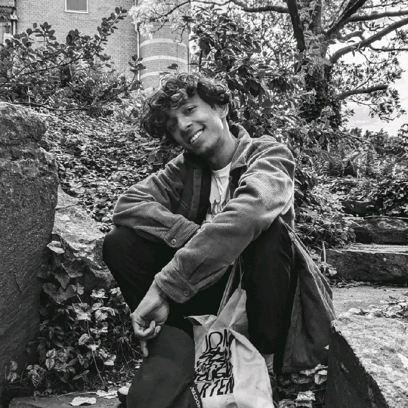

About

Atharva Gupta (b. 1999, India) is a new media artist, sculptor, and researcher based in Groningen, the Netherlands. His practice moves through sound art, kinetic sculpture, audiovisual performance, and experimental media, approaching technology as something emotional, erratic, and entangled with both body and politics. He builds objects, systems, and situations grounded in personal relationships with technology.
Atharva Gupta is an artist-researcher at the Frank Mohr Institute, Minerva Academy. This portfolio collects installations, performance works, sound releases, visual research, and TouchDesigner tutorials by Atharva Gupta, a new media artist working at the intersection of sound, sculpture, and spatial practice.
CV
Education
Master of Arts (MA), Fine Arts, Media, Art, Design and Technology
Sep. 2024 – Aug. 2026
Master of Arts (MA), Arts and Culture, Arts, Cognition and Criticism
Sep. 2022 – Aug. 2023
Bachelor of Arts (BA), Triple Major, Psychology, Sociology and Literature
Aug. 2017 – Jun. 2020
Work
Workshop Assistant (Electronics and Programming) · Minerva Academy (Hanze University of Applied Sciences)
Oct. 2025 - Jul. 2026
Artist · Sound, Technology, Research, Performance
Oct. 2023 - Present
Research and Development Intern · Broedplaats De Campagne
Feb. 2023 – Oct. 2023
Research Assistant · University of Groningen
Oct. 2022 – Aug. 2023
Skills
Art Research Art Education New Media Art Cultural Research Interactive Media Creative Concept Design Sound Design VJing DJing TouchDesigner Ableton Live Arduino IDE Web UI Python Interactive Audiovisual Installations Workshops Digital Art Generative AV